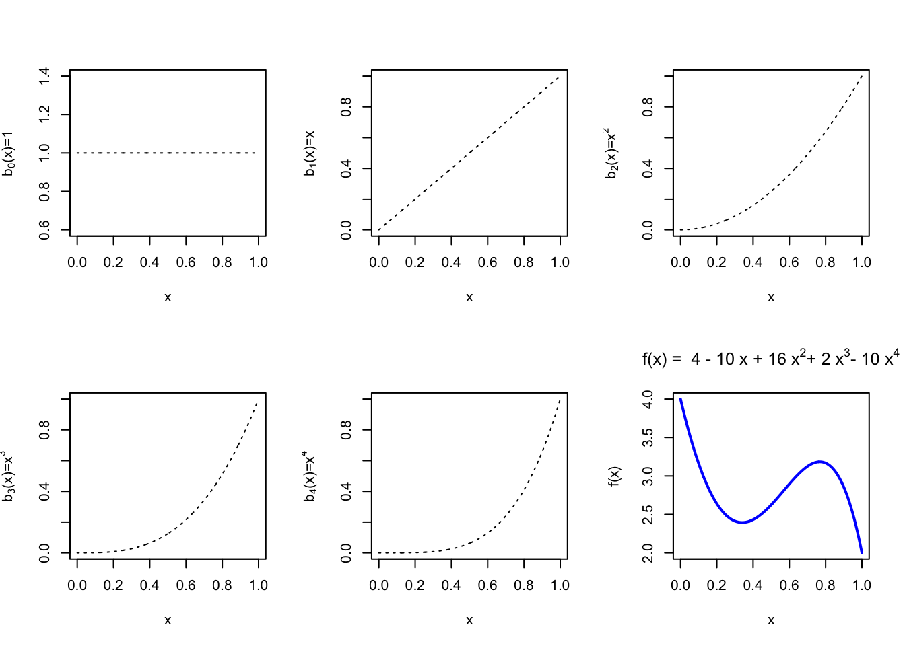
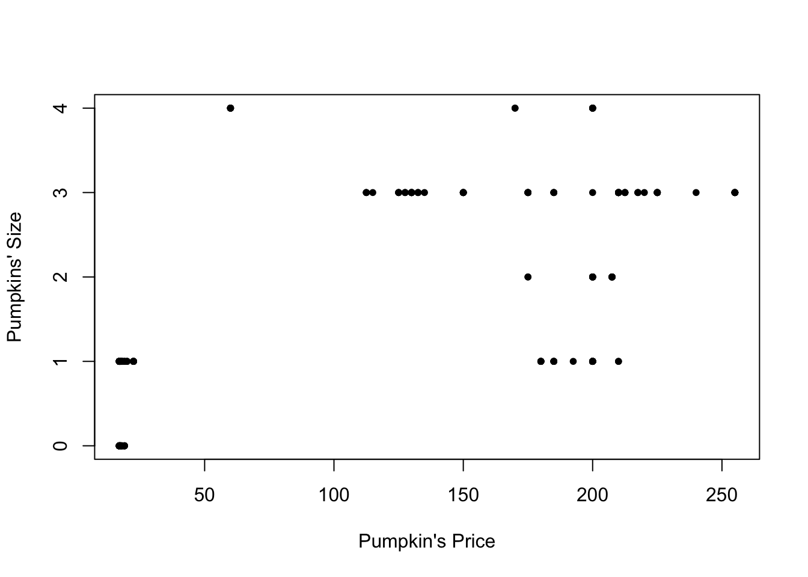
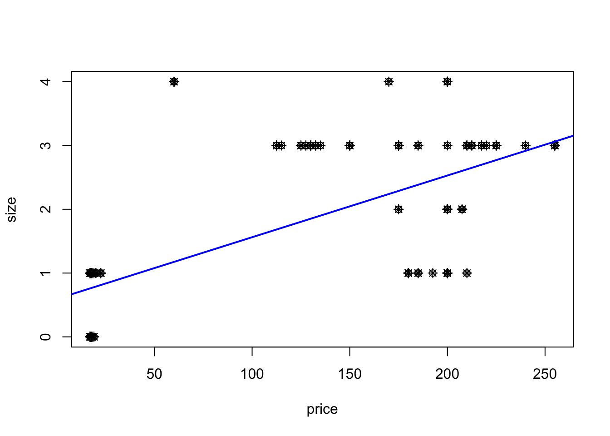
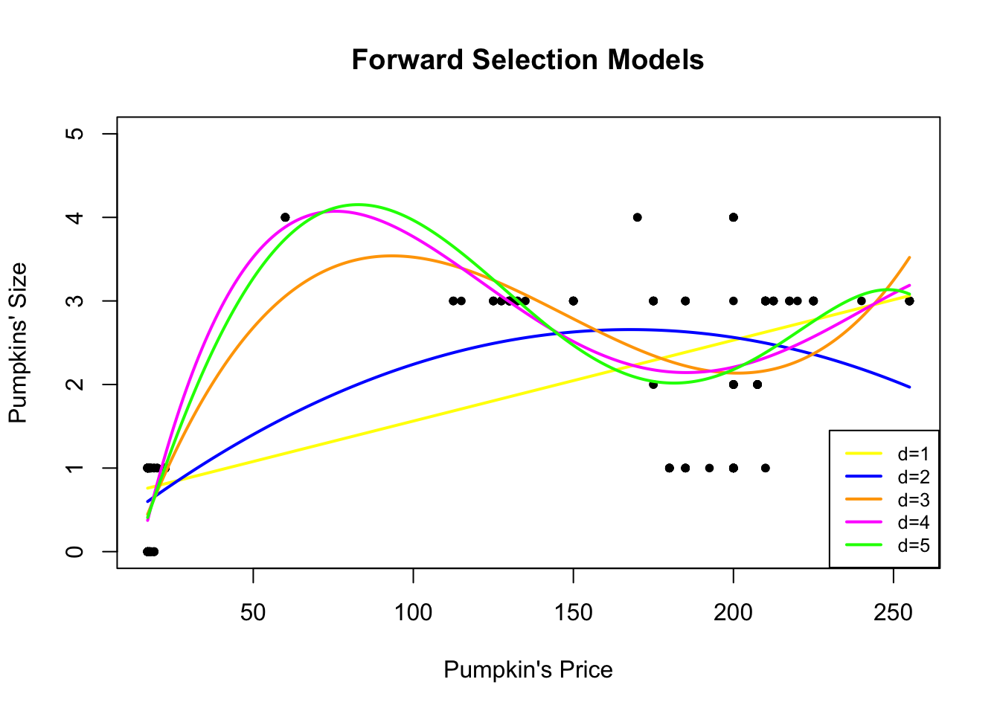
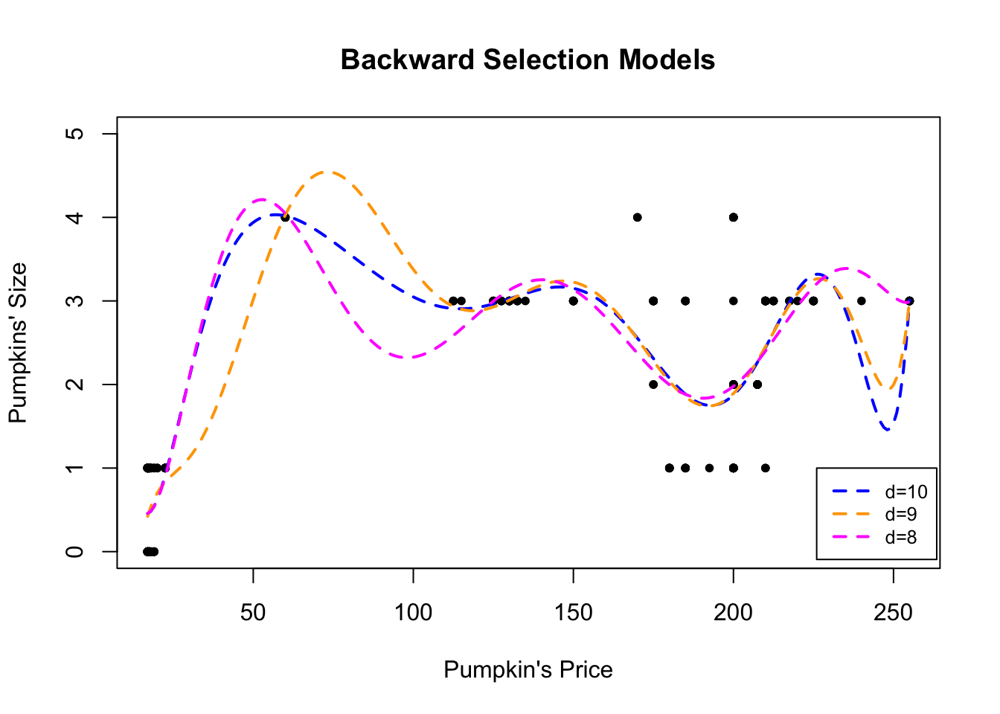
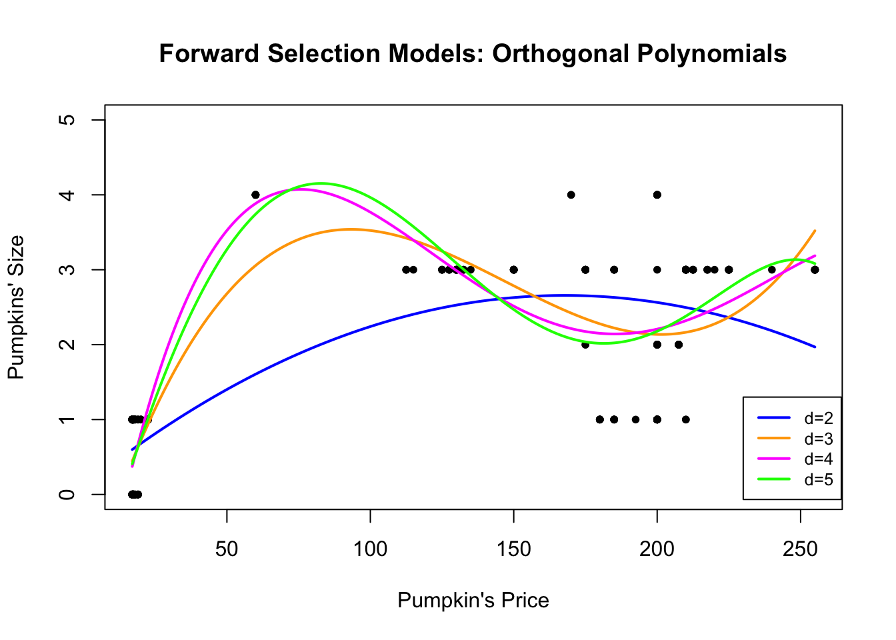
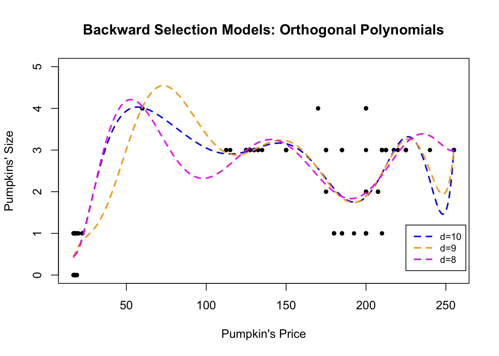

4.1 Polynomial Regression
The simplest form of nonlinear regression is the polynomial regression which is an extension of the linear model by adding higher order terms of the predictor(s). To study this type of regression, we need to first define the polynomial basis functions.
4.1.1 Polynomial Basis Functions
If \(b_j(x)\) is the \(j\)th basis function, then \(f\) has the following representation \[f(x) = \sum_{j=0}^{d} b_j(x) \beta_j\] for some values \(\beta_j\). Therefore, we can write the nonlinear model \(y_i = f(x_i) + \varepsilon_i\) as a linear model (with respect to the coefficients) \[y_i = \beta_0 + \sum_{j=1}^{d} b_j(x_i) \beta_j + \varepsilon_i\] Suppose that \(f\) is believed to be a 4th order polynomial, so the space of polynomials of order 4 and below contains \(f\).
A basis for this space is
\[\begin{align*}
b_0(x) &= 1\\
b_1(x) &= x\\
b_2(x) &= x^2\\
b_3(x) &= x^3\\
b_4(x) &= x^4
\end{align*}\]
so that the model becomes
\[y_i = \underbrace{\beta_0 + \beta_1 x_i+\beta_2 x^2_i+ \beta_3 x^3_i + \beta_4 x^4_i}_{= \beta_0 + \sum_{j=1}^{d} b_j(x_i) \beta_j} +\varepsilon_i\]
Illustration of the Polynomial Basis Functions
Representation of a function in terms of basis functions using a polynomial basis. The following code creates the plots the polynomial basis function up to order 4
x=seq(0, 1, by=0.001)
b0 = rep(1, length(x))
b1 = x
b2 = x^2
b3 = x^3
b4 = x^4
fun1 = 4*b0 -10* b1 + 16*b2 + 2*b3 -10*b4
par(mfrow = c(2,3))
plot(x, b0, type='l', lty=3, ylab=expression("b"[0]*"(x)=1"))
plot(x, b1, type='l',lty=3, ylab=expression("b"[1]*"(x)=x"))
plot(x, b2, type='l',lty=3, ylab=expression("b"[2]*"(x)=x"^2))
plot(x, b3, type='l',lty=3, ylab=expression("b"[3]*"(x)=x"^3))
plot(x, b4, type='l',lty=3, ylab=expression("b"[4]*"(x)=x"^4))
plot(x, fun1, type='l', ylab="f(x)", main=expression("f(x) = 4 - 10 x + 16 x"^2*"+ 2 x"^3*"- 10 x"^4), col="blue", lwd=2)
4.1.2 Polynomial Regression
From now on, assume \(x \in \mathbb{R}\) is one-dimensional, and extensions to multi-dimensional cases will be discussed later. So, for \(x_i \in \mathbb{R}\), \[ y_i = \beta_0 + \beta_1 x_i + \beta_2 x_i^2 + \cdots + \beta_d x_i^d + \varepsilon_i \]
Then, we create the new variables \(X_2 = X^2, \ldots, X_d = X^d\), and treat this as a multiple linear regression model: \[ \begin{pmatrix} y_1 \\ y_2 \\ \vdots \\ y_n \end{pmatrix}_{n \times 1} = \begin{pmatrix} 1 & x_1 & x_1^2 & \cdots & x_1^d \\ 1 & x_2 & x_2^2 & \cdots & x_2^d \\ \vdots & \vdots & \vdots & \ddots & \vdots \\ 1 & x_n & x_n^2 & \cdots & x_n^d \end{pmatrix}_{n \times (d+1)} \begin{pmatrix} \beta_0 \\ \beta_1 \\ \vdots \\ \beta_d \end{pmatrix}_{(d+1) \times 1} + \varepsilon \]
Therefore, we can say that a polynomial regression model is defined as follows:
Polynomial Regression Model
A non-linear model can be represented using a basis of polynomial functions as follows: \[y_i = f(x_i) + \varepsilon_i \,\,\, \longrightarrow \,\,\, y_i =\beta_0 + \sum_{j=1}^{d} b_j(x_i) \beta_j + \varepsilon_i\] where \(d\) is the degree of the polynomial component.
How do we choose \(d\)?
Forward Approach: Keep adding terms until the last added term is not significant.
Backward Approach: Start with a large \(d\), and keep eliminating the terms that are not statistically significant, starting with the highest order term.
Once we pick a value of \(d\), then we usually do not test the significance of the lower-order terms. Therefore, when we decide to use a polynomial of degree \(d\), by default, we include all the lower-order terms in our model.
Reasoning
In regression analysis, we do not want our results to be affected by a change of location/scale of the data. Consider the following example:
Suppose the data \(\{y_i,x_i\}_{i=1}^n\) are generated by the model:
\[y_i=x_i^2 + \varepsilon_i,\quad \varepsilon_i \sim \mathcal{N}(0,\sigma^2)\]
But, they are instead recorded as \(\{z_i,x_i\}_{i=1}^n\), where \(z_i=x_i+2\), that is,
\[y_i=(z_i-2)^2 + \varepsilon_i=4 -4z_i +z_i^2+\varepsilon_i\]
The linear term could become significant, if we shift the \(x\) values.
Exception: When we have a particular polynomial function in mind, e.g. the data are collected to test a particular physics formula \(Y\approx X^2 + constant\), then you should test whether you can drop the linear term.
The Chicago Pumpkins Example
The pumpkins.csv data set contains information regarding the size and price of pumpkins sold in the Chicago area (data can be found here.). Our goal in this example is to predict the size of the pumpkin (response) based on its price (predictor).
The scatter plot of the data is shown below:
pumpkins = read.csv("data/week4/chicagopumpkins.csv",header=TRUE)
plot(pumpkins$price, pumpkins$size, pch=20, xlab="Pumpkin's Price", ylab="Pumpkins' Size") We see that a linear fit is probably not a good idea. Indeed,
##
## Call:
## lm(formula = size ~ price, data = pumpkins)
##
## Residuals:
## Min 1Q Median 3Q Max
## -1.6272 -0.7594 0.2244 0.3728 2.8245
##
## Coefficients:
## Estimate Std. Error t value Pr(>|t|)
## (Intercept) 0.5948315 0.0988339 6.018 6.35e-09 ***
## price 0.0096781 0.0006856 14.117 < 2e-16 ***
## ---
## Signif. codes: 0 '***' 0.001 '**' 0.01 '*' 0.05 '.' 0.1 ' ' 1
##
## Residual standard error: 0.9477 on 246 degrees of freedom
## Multiple R-squared: 0.4475, Adjusted R-squared: 0.4453
## F-statistic: 199.3 on 1 and 246 DF, p-value: < 2.2e-16Although the predictor is significant at explaining the response, the \(R^2\) is on the lower end and the scatter plot does not support a straight line as a good fit.
plot(size ~ price, data=pumpkins)
points(size ~ price, data=pumpkins, pch=8)
abline(lm.pumpkins, col="blue", lwd=2)
We want to select a higher order model and we will do so following a Forward Selection approach first and a Backward Selection method second:
- We start with a Forward Selection approach, i.e. we start by a linear model, and we keep adding higher order terms until the added term becomes statistically insignificant.
##
## Call:
## lm(formula = size ~ price, data = pumpkins)
##
## Residuals:
## Min 1Q Median 3Q Max
## -1.6272 -0.7594 0.2244 0.3728 2.8245
##
## Coefficients:
## Estimate Std. Error t value Pr(>|t|)
## (Intercept) 0.5948315 0.0988339 6.018 6.35e-09 ***
## price 0.0096781 0.0006856 14.117 < 2e-16 ***
## ---
## Signif. codes: 0 '***' 0.001 '**' 0.01 '*' 0.05 '.' 0.1 ' ' 1
##
## Residual standard error: 0.9477 on 246 degrees of freedom
## Multiple R-squared: 0.4475, Adjusted R-squared: 0.4453
## F-statistic: 199.3 on 1 and 246 DF, p-value: < 2.2e-16##
## Call:
## lm(formula = size ~ price + I(price^2), data = pumpkins)
##
## Residuals:
## Min 1Q Median 3Q Max
## -1.6438 -0.6029 0.3695 0.4895 2.3941
##
## Coefficients:
## Estimate Std. Error t value Pr(>|t|)
## (Intercept) 1.093e-01 1.174e-01 0.932 0.353
## price 3.037e-02 3.208e-03 9.469 < 2e-16 ***
## I(price^2) -9.051e-05 1.375e-05 -6.582 2.8e-10 ***
## ---
## Signif. codes: 0 '***' 0.001 '**' 0.01 '*' 0.05 '.' 0.1 ' ' 1
##
## Residual standard error: 0.8754 on 245 degrees of freedom
## Multiple R-squared: 0.5305, Adjusted R-squared: 0.5267
## F-statistic: 138.4 on 2 and 245 DF, p-value: < 2.2e-16##
## Call:
## lm(formula = size ~ price + I(price^2) + I(price^3), data = pumpkins)
##
## Residuals:
## Min 1Q Median 3Q Max
## -1.2786 -0.4937 -0.1368 0.5531 1.8633
##
## Coefficients:
## Estimate Std. Error t value Pr(>|t|)
## (Intercept) -1.414e+00 1.691e-01 -8.36 4.83e-15 ***
## price 1.256e-01 9.079e-03 13.83 < 2e-16 ***
## I(price^2) -9.845e-04 8.239e-05 -11.95 < 2e-16 ***
## I(price^3) 2.228e-06 2.034e-07 10.95 < 2e-16 ***
## ---
## Signif. codes: 0 '***' 0.001 '**' 0.01 '*' 0.05 '.' 0.1 ' ' 1
##
## Residual standard error: 0.7182 on 244 degrees of freedom
## Multiple R-squared: 0.6853, Adjusted R-squared: 0.6814
## F-statistic: 177.1 on 3 and 244 DF, p-value: < 2.2e-16lm.pumpkins4 = lm(size ~ price + I(price^2) + I(price^3) + I(price^4), data=pumpkins)
summary(lm.pumpkins4)##
## Call:
## lm(formula = size ~ price + I(price^2) + I(price^3) + I(price^4),
## data = pumpkins)
##
## Residuals:
## Min 1Q Median 3Q Max
## -1.3200 -0.4497 -0.1241 0.5539 1.7925
##
## Coefficients:
## Estimate Std. Error t value Pr(>|t|)
## (Intercept) -2.871e+00 3.782e-01 -7.590 6.83e-13 ***
## price 2.314e-01 2.630e-02 8.800 2.60e-16 ***
## I(price^2) -2.565e-03 3.785e-04 -6.776 9.25e-11 ***
## I(price^3) 1.061e-05 1.973e-06 5.378 1.76e-07 ***
## I(price^4) -1.470e-08 3.443e-09 -4.271 2.80e-05 ***
## ---
## Signif. codes: 0 '***' 0.001 '**' 0.01 '*' 0.05 '.' 0.1 ' ' 1
##
## Residual standard error: 0.6941 on 243 degrees of freedom
## Multiple R-squared: 0.7073, Adjusted R-squared: 0.7025
## F-statistic: 146.8 on 4 and 243 DF, p-value: < 2.2e-16lm.pumpkins5 = lm(size ~ price + I(price^2) + I(price^3) + I(price^4)+ I(price^5), data=pumpkins)
summary(lm.pumpkins5)##
## Call:
## lm(formula = size ~ price + I(price^2) + I(price^3) + I(price^4) +
## I(price^5), data = pumpkins)
##
## Residuals:
## Min 1Q Median 3Q Max
## -1.38082 -0.46537 -0.08211 0.53463 1.91954
##
## Coefficients:
## Estimate Std. Error t value Pr(>|t|)
## (Intercept) -1.691e+00 7.112e-01 -2.378 0.0182 *
## price 1.305e-01 5.791e-02 2.253 0.0251 *
## I(price^2) -2.479e-04 1.244e-03 -0.199 0.8422
## I(price^3) -1.078e-05 1.113e-05 -0.969 0.3333
## I(price^4) 7.118e-08 4.409e-08 1.615 0.1077
## I(price^5) -1.248e-10 6.386e-11 -1.954 0.0519 .
## ---
## Signif. codes: 0 '***' 0.001 '**' 0.01 '*' 0.05 '.' 0.1 ' ' 1
##
## Residual standard error: 0.6901 on 242 degrees of freedom
## Multiple R-squared: 0.7118, Adjusted R-squared: 0.7059
## F-statistic: 119.6 on 5 and 242 DF, p-value: < 2.2e-16We see that the 5th order model has a 5th order term with \(p\)-value equal to 0.0519, which is higher than 5%, so we conclude that the optimal order for the polynomial, according to the forward selection method is \(d=4\). So, the fitted model is: \[\hat{y}_i = \hat{\beta}_0 + \hat{\beta}_1 x + \hat{\beta}_2 x^2 + \hat{\beta}_3 x^4 + \hat{\beta}_4 x^4 \]
If we plot all the fitted models, we have:
newprice = data.frame(price=seq(17, 255, 1))
plot(pumpkins$price, pumpkins$size, pch=20, ylim=c(0,5), xlab="Pumpkin's Price", ylab="Pumpkins' Size", main="Forward Selection Models")
lines(newprice$price, predict(lm.pumpkins, newprice), col="yellow", lty=1, lwd=2);
lines(newprice$price, predict(lm.pumpkins2, newprice), col="blue", lty=1, lwd=2);
lines(newprice$price, predict(lm.pumpkins3, newprice), col="orange", lty=1, lwd=2);
lines(newprice$price, predict(lm.pumpkins4, newprice), col="magenta", lty=1, lwd=2);
lines(newprice$price, predict(lm.pumpkins5, newprice), col="green", lty=1, lwd=2);
legend(230, 1.45, legend=c("d=1", "d=2", "d=3", "d=4", "d=5"),
col=c("yellow", "blue", "orange", "magenta", "green"), lty=c(1,1,1,1,1), cex=0.8, lwd=c(2,2,2,2,2))
The magenta line is the one that corresponds to the 4th order model.
- We can also select \(d\) using the Backward Elimination approach, that is we start with a large value for \(d\) and we eliminate terms until the highest order term in the model is statistically significant:
lm.pumpkins10 = lm(size ~ price + I(price^2) + I(price^3) + I(price^4)+ I(price^5)+ I(price^6) + I(price^7)+ I(price^8)+ I(price^9)+ I(price^10), data=pumpkins)
summary(lm.pumpkins10)##
## Call:
## lm(formula = size ~ price + I(price^2) + I(price^3) + I(price^4) +
## I(price^5) + I(price^6) + I(price^7) + I(price^8) + I(price^9) +
## I(price^10), data = pumpkins)
##
## Residuals:
## Min 1Q Median 3Q Max
## -1.44082 -0.45530 -0.01853 0.53535 2.12546
##
## Coefficients:
## Estimate Std. Error t value Pr(>|t|)
## (Intercept) 1.331e+01 2.671e+01 0.498 0.619
## price -2.191e+00 4.274e+00 -0.513 0.609
## I(price^2) 1.396e-01 2.625e-01 0.532 0.595
## I(price^3) -4.389e-03 8.140e-03 -0.539 0.590
## I(price^4) 8.198e-05 1.458e-04 0.562 0.575
## I(price^5) -9.818e-07 1.624e-06 -0.605 0.546
## I(price^6) 7.731e-09 1.163e-08 0.664 0.507
## I(price^7) -3.970e-11 5.374e-11 -0.739 0.461
## I(price^8) 1.276e-13 1.549e-13 0.824 0.411
## I(price^9) -2.321e-16 2.535e-16 -0.916 0.361
## I(price^10) 1.821e-19 1.800e-19 1.012 0.313
##
## Residual standard error: 0.6483 on 237 degrees of freedom
## Multiple R-squared: 0.7509, Adjusted R-squared: 0.7404
## F-statistic: 71.45 on 10 and 237 DF, p-value: < 2.2e-16lm.pumpkins9 = lm(size ~ price + I(price^2) + I(price^3) + I(price^4)+ I(price^5)+ I(price^6) + I(price^7)+ I(price^8)+ I(price^9), data=pumpkins)
summary(lm.pumpkins9)##
## Call:
## lm(formula = size ~ price + I(price^2) + I(price^3) + I(price^4) +
## I(price^5) + I(price^6) + I(price^7) + I(price^8) + I(price^9),
## data = pumpkins)
##
## Residuals:
## Min 1Q Median 3Q Max
## -1.4514 -0.4230 -0.0091 0.5177 2.1072
##
## Coefficients:
## Estimate Std. Error t value Pr(>|t|)
## (Intercept) -1.191e+01 9.589e+00 -1.242 0.2154
## price 1.877e+00 1.450e+00 1.295 0.1967
## I(price^2) -1.125e-01 8.271e-02 -1.360 0.1751
## I(price^3) 3.506e-03 2.316e-03 1.514 0.1314
## I(price^4) -6.094e-05 3.623e-05 -1.682 0.0939 .
## I(price^5) 6.252e-07 3.391e-07 1.844 0.0664 .
## I(price^6) -3.875e-09 1.945e-09 -1.993 0.0475 *
## I(price^7) 1.425e-11 6.704e-12 2.125 0.0346 *
## I(price^8) -2.859e-14 1.276e-14 -2.241 0.0259 *
## I(price^9) 2.411e-17 1.030e-17 2.340 0.0201 *
## ---
## Signif. codes: 0 '***' 0.001 '**' 0.01 '*' 0.05 '.' 0.1 ' ' 1
##
## Residual standard error: 0.6483 on 238 degrees of freedom
## Multiple R-squared: 0.7499, Adjusted R-squared: 0.7404
## F-statistic: 79.27 on 9 and 238 DF, p-value: < 2.2e-16lm.pumpkins8 = lm(size ~ price + I(price^2) + I(price^3)+ I(price^4)+ I(price^5)+ I(price^6) + I(price^7)+ I(price^8), data=pumpkins)
summary(lm.pumpkins8)##
## Call:
## lm(formula = size ~ price + I(price^2) + I(price^3) + I(price^4) +
## I(price^5) + I(price^6) + I(price^7) + I(price^8), data = pumpkins)
##
## Residuals:
## Min 1Q Median 3Q Max
## -1.39988 -0.45678 -0.05827 0.53309 2.02119
##
## Coefficients:
## Estimate Std. Error t value Pr(>|t|)
## (Intercept) 9.140e+00 3.347e+00 2.731 0.006791 **
## price -1.368e+00 4.257e-01 -3.215 0.001486 **
## I(price^2) 7.522e-02 2.032e-02 3.702 0.000266 ***
## I(price^3) -1.798e-03 4.783e-04 -3.759 0.000214 ***
## I(price^4) 2.262e-05 6.154e-06 3.675 0.000293 ***
## I(price^5) -1.611e-07 4.541e-08 -3.549 0.000466 ***
## I(price^6) 6.535e-10 1.918e-10 3.407 0.000771 ***
## I(price^7) -1.406e-12 4.316e-13 -3.259 0.001282 **
## I(price^8) 1.246e-15 4.008e-16 3.108 0.002112 **
## ---
## Signif. codes: 0 '***' 0.001 '**' 0.01 '*' 0.05 '.' 0.1 ' ' 1
##
## Residual standard error: 0.6544 on 239 degrees of freedom
## Multiple R-squared: 0.7441, Adjusted R-squared: 0.7355
## F-statistic: 86.87 on 8 and 239 DF, p-value: < 2.2e-16Starting with an order 10 model, we identify that an 9th order model is optimal according to the backward elimination criterion. If we plot all the fitted models, we have:
newprice = data.frame(price=seq(17, 255, 1))
plot(pumpkins$price, pumpkins$size, ylim=c(0,5), pch=20, xlab="Pumpkin's Price", ylab="Pumpkins' Size", main="Backward Selection Models")
lines(newprice$price, predict(lm.pumpkins10, newprice), col="blue", lty=2, lwd=2);
lines(newprice$price, predict(lm.pumpkins9, newprice), col="orange", lty=2, lwd=2);
lines(newprice$price, predict(lm.pumpkins8, newprice), col="magenta", lty=2, lwd=2);
legend(226, 1, legend=c("d=10", "d=9", "d=8"),
col=c("blue", "orange", "magenta"), lty=c(2,2,2), cex=0.8, lwd=2)
The magenta line is the one that corresponds to the 9th order model.
For the fitted model we finally choose, we should (as always) perform diagnostic tests.
4.1.3 Orthogonal Polynomials
Fitting high order polynomials is generally not recommended, since they are very unstable and difficult to interpret. In addition, successive predictors \(x^j\) are highly correlated introducing multicollinearity problems. One way around this is to fit orthogonal polynomials of the form: \[y_i=\beta_0+\beta_1z_1+\ldots+\beta_d z_d+\varepsilon_i\] where each \(z_j=a_{1} + b_{2} x + \ldots+ \kappa_j x^j\) is a polynomial of order \(j\) with coefficients chosen such that \(z_i^\top z_j=0\) (i.e. the inner product of any two polynomials is zero).
The Chicago Pumpkins Example
In R, we can fit orthogonal polynomials using the poly function. In the code below, we repeat the same process as before (for choosing \(d\)) using the orthogonal polynomials.
##
## Call:
## lm(formula = size ~ poly(price, 2), data = pumpkins)
##
## Residuals:
## Min 1Q Median 3Q Max
## -1.6438 -0.6029 0.3695 0.4895 2.3941
##
## Coefficients:
## Estimate Std. Error t value Pr(>|t|)
## (Intercept) 1.70161 0.05559 30.612 < 2e-16 ***
## poly(price, 2)1 13.37846 0.87538 15.283 < 2e-16 ***
## poly(price, 2)2 -5.76139 0.87538 -6.582 2.8e-10 ***
## ---
## Signif. codes: 0 '***' 0.001 '**' 0.01 '*' 0.05 '.' 0.1 ' ' 1
##
## Residual standard error: 0.8754 on 245 degrees of freedom
## Multiple R-squared: 0.5305, Adjusted R-squared: 0.5267
## F-statistic: 138.4 on 2 and 245 DF, p-value: < 2.2e-16##
## Call:
## lm(formula = size ~ poly(price, 3), data = pumpkins)
##
## Residuals:
## Min 1Q Median 3Q Max
## -1.2786 -0.4937 -0.1368 0.5531 1.8633
##
## Coefficients:
## Estimate Std. Error t value Pr(>|t|)
## (Intercept) 1.7016 0.0456 37.313 < 2e-16 ***
## poly(price, 3)1 13.3785 0.7182 18.628 < 2e-16 ***
## poly(price, 3)2 -5.7614 0.7182 -8.022 4.35e-14 ***
## poly(price, 3)3 7.8672 0.7182 10.954 < 2e-16 ***
## ---
## Signif. codes: 0 '***' 0.001 '**' 0.01 '*' 0.05 '.' 0.1 ' ' 1
##
## Residual standard error: 0.7182 on 244 degrees of freedom
## Multiple R-squared: 0.6853, Adjusted R-squared: 0.6814
## F-statistic: 177.1 on 3 and 244 DF, p-value: < 2.2e-16##
## Call:
## lm(formula = size ~ poly(price, 4), data = pumpkins)
##
## Residuals:
## Min 1Q Median 3Q Max
## -1.3200 -0.4497 -0.1241 0.5539 1.7925
##
## Coefficients:
## Estimate Std. Error t value Pr(>|t|)
## (Intercept) 1.70161 0.04407 38.608 < 2e-16 ***
## poly(price, 4)1 13.37846 0.69408 19.275 < 2e-16 ***
## poly(price, 4)2 -5.76139 0.69408 -8.301 7.22e-15 ***
## poly(price, 4)3 7.86718 0.69408 11.335 < 2e-16 ***
## poly(price, 4)4 -2.96423 0.69408 -4.271 2.80e-05 ***
## ---
## Signif. codes: 0 '***' 0.001 '**' 0.01 '*' 0.05 '.' 0.1 ' ' 1
##
## Residual standard error: 0.6941 on 243 degrees of freedom
## Multiple R-squared: 0.7073, Adjusted R-squared: 0.7025
## F-statistic: 146.8 on 4 and 243 DF, p-value: < 2.2e-16##
## Call:
## lm(formula = size ~ poly(price, 5), data = pumpkins)
##
## Residuals:
## Min 1Q Median 3Q Max
## -1.38082 -0.46537 -0.08211 0.53463 1.91954
##
## Coefficients:
## Estimate Std. Error t value Pr(>|t|)
## (Intercept) 1.70161 0.04382 38.831 < 2e-16 ***
## poly(price, 5)1 13.37846 0.69009 19.387 < 2e-16 ***
## poly(price, 5)2 -5.76139 0.69009 -8.349 5.35e-15 ***
## poly(price, 5)3 7.86718 0.69009 11.400 < 2e-16 ***
## poly(price, 5)4 -2.96423 0.69009 -4.295 2.53e-05 ***
## poly(price, 5)5 -1.34841 0.69009 -1.954 0.0519 .
## ---
## Signif. codes: 0 '***' 0.001 '**' 0.01 '*' 0.05 '.' 0.1 ' ' 1
##
## Residual standard error: 0.6901 on 242 degrees of freedom
## Multiple R-squared: 0.7118, Adjusted R-squared: 0.7059
## F-statistic: 119.6 on 5 and 242 DF, p-value: < 2.2e-16newprice = data.frame(price=seq(17, 255, 1))
plot(pumpkins$price, pumpkins$size, pch=20, ylim=c(0,5),xlab="Pumpkin's Price", ylab="Pumpkins' Size", main="Forward Selection Models: Orthogonal Polynomials")
lines(newprice$price, predict(lm.pumpkinsO2, newprice), col="blue", lty=1, lwd=2);
lines(newprice$price, predict(lm.pumpkinsO3, newprice), col="orange", lty=1, lwd=2);
lines(newprice$price, predict(lm.pumpkinsO4, newprice), col="magenta", lty=1, lwd=2);
lines(newprice$price, predict(lm.pumpkinsO5, newprice), col="green", lty=1, lwd=2);
legend(230, 1.3, legend=c("d=2", "d=3", "d=4", "d=5"),
col=c("blue", "orange", "magenta", "green"), lty=c(1,1,1,1), cex=0.8, lwd=c(2,2,2,2))
# Backward Selection
lm.pumpkinsO10 = lm(size ~ poly(price,10), data=pumpkins)
summary(lm.pumpkinsO10)##
## Call:
## lm(formula = size ~ poly(price, 10), data = pumpkins)
##
## Residuals:
## Min 1Q Median 3Q Max
## -1.44082 -0.45530 -0.01853 0.53535 2.12546
##
## Coefficients:
## Estimate Std. Error t value Pr(>|t|)
## (Intercept) 1.70161 0.04117 41.335 < 2e-16 ***
## poly(price, 10)1 13.37846 0.64829 20.636 < 2e-16 ***
## poly(price, 10)2 -5.76139 0.64829 -8.887 < 2e-16 ***
## poly(price, 10)3 7.86718 0.64829 12.135 < 2e-16 ***
## poly(price, 10)4 -2.96423 0.64829 -4.572 7.77e-06 ***
## poly(price, 10)5 -1.34841 0.64829 -2.080 0.03861 *
## poly(price, 10)6 -1.45456 0.64829 -2.244 0.02578 *
## poly(price, 10)7 -2.57955 0.64829 -3.979 9.20e-05 ***
## poly(price, 10)8 2.03378 0.64829 3.137 0.00192 **
## poly(price, 10)9 1.51698 0.64829 2.340 0.02012 *
## poly(price, 10)10 0.65591 0.64829 1.012 0.31269
## ---
## Signif. codes: 0 '***' 0.001 '**' 0.01 '*' 0.05 '.' 0.1 ' ' 1
##
## Residual standard error: 0.6483 on 237 degrees of freedom
## Multiple R-squared: 0.7509, Adjusted R-squared: 0.7404
## F-statistic: 71.45 on 10 and 237 DF, p-value: < 2.2e-16##
## Call:
## lm(formula = size ~ poly(price, 9), data = pumpkins)
##
## Residuals:
## Min 1Q Median 3Q Max
## -1.4514 -0.4230 -0.0091 0.5177 2.1072
##
## Coefficients:
## Estimate Std. Error t value Pr(>|t|)
## (Intercept) 1.70161 0.04117 41.333 < 2e-16 ***
## poly(price, 9)1 13.37846 0.64833 20.635 < 2e-16 ***
## poly(price, 9)2 -5.76139 0.64833 -8.887 < 2e-16 ***
## poly(price, 9)3 7.86718 0.64833 12.135 < 2e-16 ***
## poly(price, 9)4 -2.96423 0.64833 -4.572 7.76e-06 ***
## poly(price, 9)5 -1.34841 0.64833 -2.080 0.03861 *
## poly(price, 9)6 -1.45456 0.64833 -2.244 0.02578 *
## poly(price, 9)7 -2.57955 0.64833 -3.979 9.20e-05 ***
## poly(price, 9)8 2.03378 0.64833 3.137 0.00192 **
## poly(price, 9)9 1.51698 0.64833 2.340 0.02012 *
## ---
## Signif. codes: 0 '***' 0.001 '**' 0.01 '*' 0.05 '.' 0.1 ' ' 1
##
## Residual standard error: 0.6483 on 238 degrees of freedom
## Multiple R-squared: 0.7499, Adjusted R-squared: 0.7404
## F-statistic: 79.27 on 9 and 238 DF, p-value: < 2.2e-16##
## Call:
## lm(formula = size ~ poly(price, 8), data = pumpkins)
##
## Residuals:
## Min 1Q Median 3Q Max
## -1.39988 -0.45678 -0.05827 0.53309 2.02119
##
## Coefficients:
## Estimate Std. Error t value Pr(>|t|)
## (Intercept) 1.70161 0.04155 40.951 < 2e-16 ***
## poly(price, 8)1 13.37846 0.65437 20.445 < 2e-16 ***
## poly(price, 8)2 -5.76139 0.65437 -8.805 2.71e-16 ***
## poly(price, 8)3 7.86718 0.65437 12.023 < 2e-16 ***
## poly(price, 8)4 -2.96423 0.65437 -4.530 9.32e-06 ***
## poly(price, 8)5 -1.34841 0.65437 -2.061 0.040421 *
## poly(price, 8)6 -1.45456 0.65437 -2.223 0.027162 *
## poly(price, 8)7 -2.57955 0.65437 -3.942 0.000106 ***
## poly(price, 8)8 2.03378 0.65437 3.108 0.002112 **
## ---
## Signif. codes: 0 '***' 0.001 '**' 0.01 '*' 0.05 '.' 0.1 ' ' 1
##
## Residual standard error: 0.6544 on 239 degrees of freedom
## Multiple R-squared: 0.7441, Adjusted R-squared: 0.7355
## F-statistic: 86.87 on 8 and 239 DF, p-value: < 2.2e-16plot(pumpkins$price, pumpkins$size, pch=20, ylim=c(0,5), xlab="Pumpkin's Price", ylab="Pumpkins' Size", main="Backward Selection Models: Orthogonal Polynomials")
lines(newprice$price, predict(lm.pumpkinsO10, newprice), col="blue", lty=2, lwd=2);
lines(newprice$price, predict(lm.pumpkinsO9, newprice), col="orange", lty=2, lwd=2);
lines(newprice$price, predict(lm.pumpkinsO8, newprice), col="magenta", lty=2, lwd=2);
legend(225, 1.2, legend=c("d=10", "d=9", "d=8"), col=c("blue", "orange", "magenta"), lty=c(2,2,2), cex=0.8, lwd=2)
4.1.4 Piece-wise Polynomials
If the true mean of \(\mathbb{E}(Y|X=x) = f(x)\) is too wiggly, we might need to fit a higher order polynomial, which is not always a good idea. Instead we consider piece-wise polynomials:
we divide the range of \(x\) into several intervals, and
within each interval, \(f(x)\) is a low-order polynomial, e.g., cubic or quadratic, but the polynomial coefficients will be different from interval to interval
we require the overall \(f(x)\) to be continuous up to certain derivatives.
This method is also called “broken-stick regression”. Its benefit is that it localizes the influence of each data point to a particular segment, but overall it is not a very smooth line as the one we obtain by fitting a single polynomial for the whole data set.